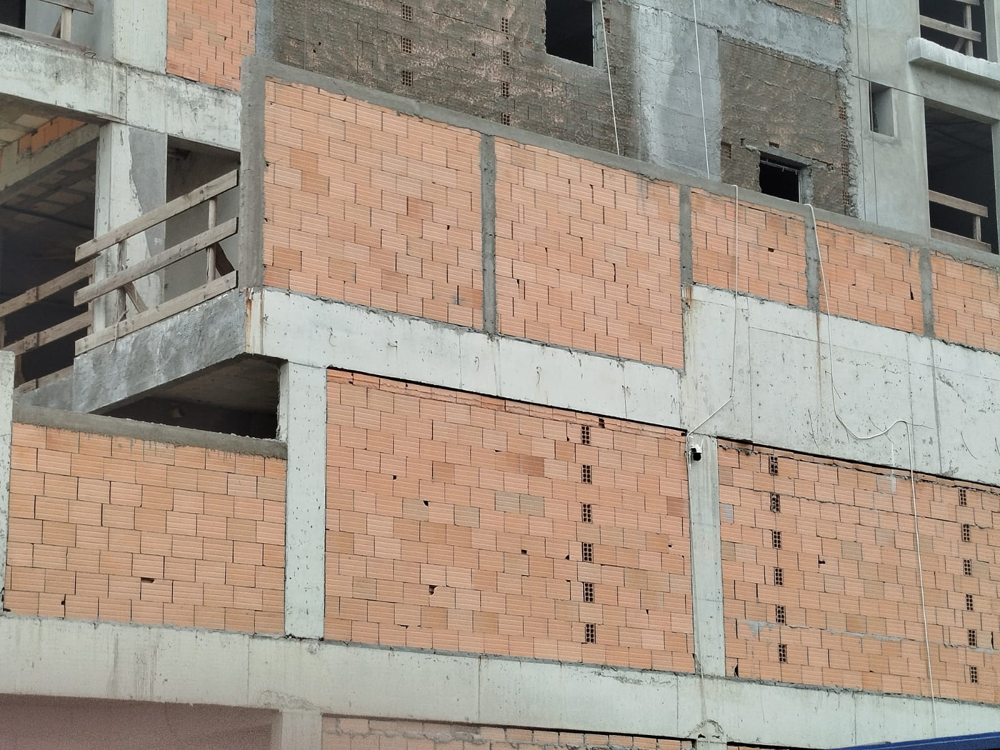

Este artigo apresenta os números reais de uma obra de alvenaria com 820 m² — executada primeiro com argamassa convencional no estudo comparativo, depois modelada com argamassa polimérica MEP. Os dados não são projeção de marketing: são resultados mensuráveis em custo, prazo, peso transportado e geração de resíduo.
A diferença de 22.800 kg entre os dois métodos representa cerca de 6 caminhões a menos de material sendo transportado até a obra — frete, descarga, estocagem e movimentação interna. Em obras com logística complexa (andares altos, lotes estreitos), esse impacto é ainda mais relevante.

| Critério | Argamassa convencional | MEP Massas |
|---|---|---|
| Consumo por m² | 29,27 kg/m² | 1,5 kg/m² (média) |
| Preparo em obra | Betoneira + cimento + areia + água | Pronto para uso — sem mistura |
| Produtividade | 9 m²/dia por pedreiro | 36 m²/dia por pedreiro (4×) |
| Cura total | 28 dias | 72 horas |
| Desperdício | 15 a 30% do volume misturado | Praticamente zero |
| Resíduo gerado | Alta geração (massa sobra e endurece) | −96% de resíduo |
| Controle de qualidade | Variável (depende do traço e do operador) | Industrializado e certificado ABNT |
| Equipamento necessário | Betoneira, baldes, colher, régua | Apenas bisnaga ou colher — sem betoneira |
A redução de custo não vem apenas do preço do material — e esse é o ponto que surpreende mais engenheiros na primeira análise. A economia é composta por:
1. Mão de obra: com 4× mais produtividade por pedreiro, a obra precisa de menos dias para executar o mesmo serviço. Menos dias de pedreiro = menos custo de mão de obra.
2. Frete e logística: transportar 1.200 kg ao invés de 24.000 kg reduz sensivelmente o número de entregas e o custo logístico total.
3. Desperdício zero: a argamassa convencional tem taxa de desperdício típica de 15 a 30%. Com MEP, o produto sai da embalagem direto para a junta — o que não foi usado volta embalado para a obra seguinte.
4. Eliminação da betoneira: sem equipamento de mistura, reduz-se o custo de locação e manutenção de betoneiras ao longo da obra.

Honestidade aqui é importante. A argamassa convencional ainda tem vantagem de custo inicial por kg em obras onde:
— A mão de obra é muito barata e abundante e o prazo não é prioridade.
— A obra é de pequeno porte e o ganho de escala não compensa o custo de frete da polimérica.
— Não há logística para entregar o produto embalado no canteiro.
Fora esses casos específicos, os dados mostram que para obras a partir de 200 m² com equipe de 2 ou mais pedreiros, a argamassa polimérica MEP tem resultado financeiro superior quando considerado o custo total do serviço.
Informe a metragem e enviamos uma planilha comparativa com os dados da sua obra específica.
Solicitar comparativo no WhatsApp